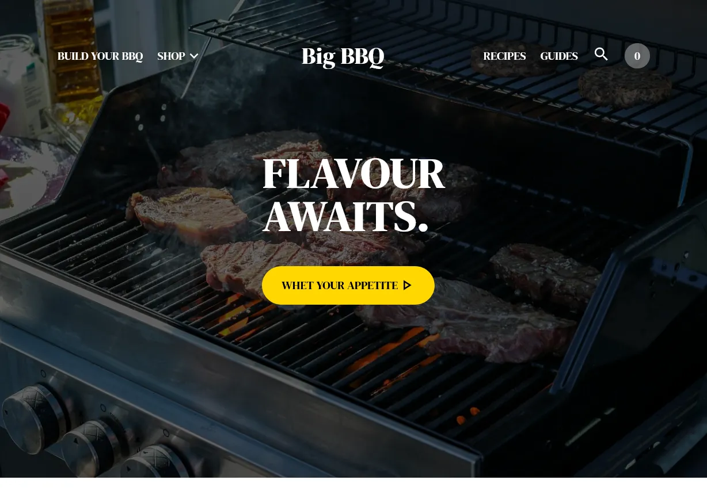

Samples
Примеры работ
Those dummy webpages were made by me to learn and practice different technologies.
Данные фиктивные сайты были созданы мной по различным ТЗ для изучения и практики разных технологий.

Internet Magazine
Интернет-журнал
Responsive and adaptive static page representing internet magazine with modern CSS features in short stylesheet
Отзывчивый и адаптивный статичный сайт, представляющий собой главную страницу интернет-издания и использующий современные CSS-приёмы

Social Network
Социальная Сеть
Single Page Application representing full-featured serverless social network with logic run in browser, login system and persistent Mobx state
Одностраничное приложение (SPA), представляющее собой полную функционалом безсерверную (serverless) социальную сеть с логикой, работающей в браузере, кэшированием MobX-состояния приложения и системой аккаунтов

Book store
Книжный Магазин
Single Page Application representing online book store's catalogue with cart functionality based on immutable Redux state
Одностраничное приложение (SPA), представляющее собой фиктивный онлайн-магазин книг с функционалом каталога и корзины, и основанное на иммутабельном состоянии Redux

Job Finder
Поисковик Работы
Single Page Application representing alternative front-end to GitHub Jobs built with hooks and CSS-library
Одностраничное приложение (SPA), представляющее собой альтернативный фронтенд для GitHub Jobs, основанное на React-хуках и CSS-библиотеке

Vue Messenger
Мессенджер
Single Page Application representing full-featured yet simple messenger built with Vue, Vuex state manager and SASS preprocessor
Одностраничное приложение (SPA), представляющее собой простой, но полноценный безсерверный мессенджер, использующий Vue, Vuex и препроцессор SASS
BBQ Shop
Магазин грилей
Responsive and adaptive static page representing internet shop of barbeques with modern CSS features, PostCSS and a bit of JavaScript
Отзывчивый и адаптивный статичный сайт, представляющий собой главную страницу интернет-магазина грилей и использующий современные CSS-приёмы, препроцессор PostCSS и немного JavaScript

Eye trainer
Тренажер для Глаз
Single Page Application representing reaction speed development game for children built with Next.js, Typescript and Redux
Одностраничное приложение (SPA), представляющее собой простую игру для детей, развивающее скорость реакции и чтения, и построенное на Next.js, Typescript и Redux